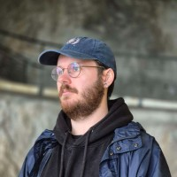

Damien SENECHAL

About me ✍️
23-year-old freelance developer with a passion for my work. I master a wide range of tools that will enable me to carry out several types of missions in this field (3D, programming, etc.).
Education & Certifications 🎓
- Scientific Baccalaureate - Balagne high school
- DUT Computer Science - IUT Montpellier
- ESMA Video game development RNCP 6 - ESMA Montpellier
Professional Experience 👔
Veridian Forge, Detroit, Michigan - Environment Artist 🎨 (Jan - Dec 2023)
January - December 2023
- I was recruited for my technical skills to create assets and robotic characters for the game “Chaos Pattern”, as well as portraits and logos in pixel art.
PERMADEATH, Montpellier, France - Gameplay Programmer Intern 🖥️ (May - June 2020)
May -June 2020
- I was a gameplay developer on Unity, and my mission was to program a character controller for a platformer (Dark Souls like).
Software and Programming language ⌨️
- 3D/2D
- Blender : ⭐⭐⭐⭐
- Aseprite : ⭐⭐⭐⭐⭐
- Substance Painter : ⭐⭐
- Substance Designer : ⭐
- Adobe Photoshop : ⭐⭐⭐
- 3DS Max : ⭐⭐⭐
- Maya : ⭐⭐
- Zbrush : ⭐
- Marmoset Toolbag : ⭐
- SpeedTree : ⭐
- Programming
- C++ : ⭐⭐⭐
- C# : ⭐⭐
- Blueprint Unreal : ⭐⭐⭐
- Python : ⭐⭐
- Java : ⭐⭐
- Javascript : ⭐⭐⭐
- Game Engine
- Unreal Engine : ⭐⭐⭐
- Unity : ⭐⭐
- Godot : ⭐
- Editing Software
- Sony Vegas Pro : ⭐⭐
- Davinci Resolve : ⭐⭐
- Other
- Github : ⭐⭐⭐⭐
- Jira : ⭐
- Trello : ⭐⭐
Skills 📐
- Hard Skills
- 3D Modeling : ⭐⭐⭐⭐
- Texturing : ⭐⭐⭐
- Sculpting : ⭐⭐
- Lighting : ⭐⭐
- Rendering : ⭐
- UV Mapping : ⭐⭐
- Game development : ⭐⭐⭐
- Environment Art : ⭐⭐⭐
- Concept Art : ⭐
- Traditional Art : ⭐
- Hand Paint Texture : ⭐
- Pixel Art : ⭐⭐⭐⭐
- Animation : ⭐
- Rigging : ⭐
- Soft Skills
- Team Oriented
- Agile methods
- Detail Oriented
- Autonomous
- Langage
- French (Native)
- English (Fluent)
- Spanish (Beginner)
Hobbies
- Create indie games
- Research technical or artistic workflows
- Reverse-engineer old games
- Study old 3D models (limitations, techniques)
- Urban Exploration
- Vintage multimedia (VHS, Audio cassette, camera, camcorder)
- Repairing objects
- Geocaching
Other